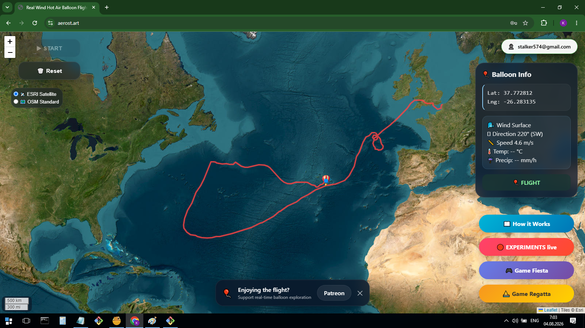
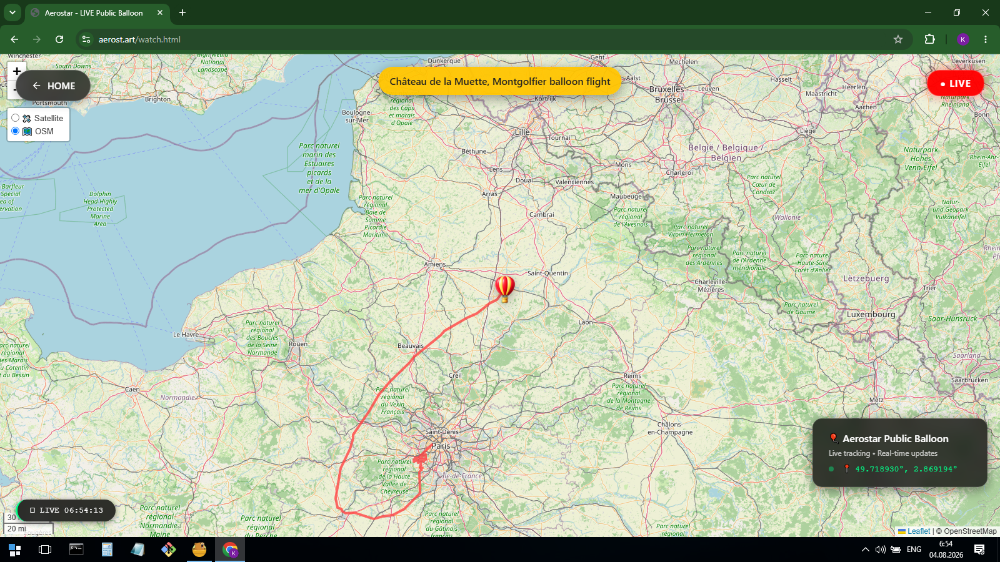
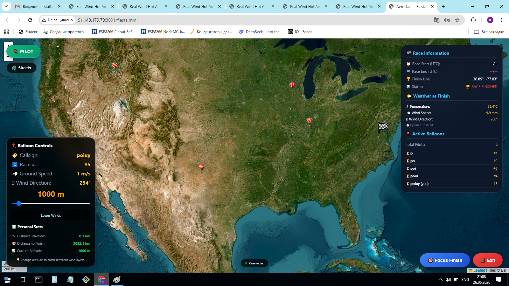

Experiments where real forces of nature become the engine of virtual worlds.
Wind is invisible, but it shapes our planet. It moves clouds, balloons, sailing ships and weather systems.
Aerost.art explores how real atmospheric data can be transformed into interactive digital experiences.
These are not traditional games. They are experiments using real-world conditions to create unique journeys.
A virtual hot air balloon travels across Earth using real-time wind data.
Launch ExperimentA playful experiment where wind, movement and virtual objects create an interactive experience.
Launch ExperimentA sailing experiment where ships are influenced by wind conditions and navigation decisions.
Launch ExperimentSnapshots and results from virtual journeys.



Atmosphere Lab will grow with new experiments exploring wind, weather, oceans and natural forces.
Explore how wind at different altitudes changes the route.